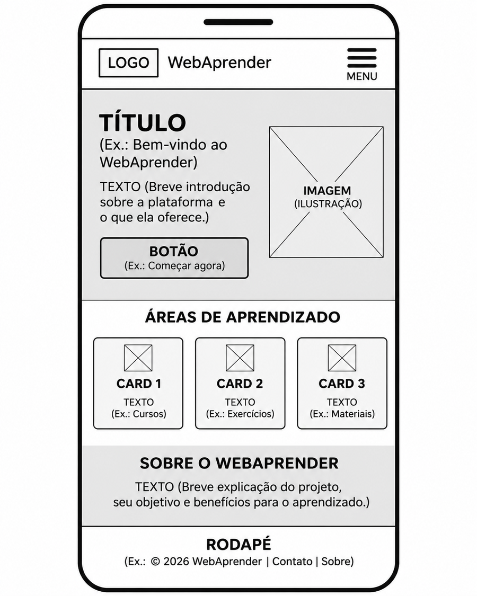
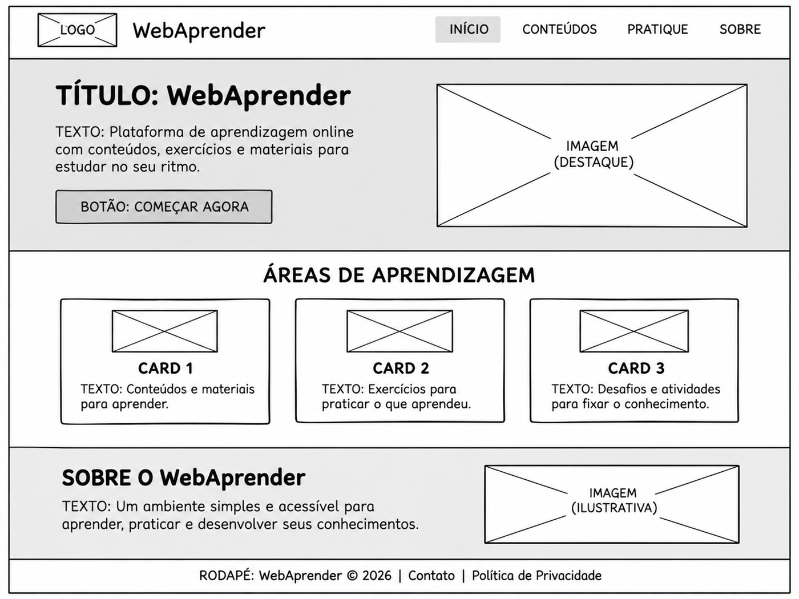

1. Nome do site
WebAprender – Guia Interativo de Programação Web.
O nome une o assunto principal, desenvolvimento para web, com a ideia de aprender de maneira gradual. É curto, fácil de reconhecer e adequado ao público iniciante.
2. Finalidade do site
Oferecer um guia introdutório de HTML, CSS e JavaScript, com explicações, uma biblioteca de quinze conteúdos filtráveis e um formulário para organizar estudos.
O projeto terá três páginas principais: Início, Conteúdos e Pratique. A biblioteca carregará dados locais em JSON usando JavaScript, permitindo filtragem, detalhes em modal e registro de favoritos no navegador. Uma página adicional exibirá as respostas do formulário.
3. Cenários do público-alvo
O público-alvo inclui estudantes iniciantes que buscam informações organizadas e acessíveis sobre programação web.
- Por onde começo a aprender HTML, CSS e JavaScript?
- Como posso encontrar conteúdos do nível iniciante e guardar meus favoritos?
- Como registrar um objetivo de estudo e verificar as informações preenchidas?
4. Esquema de cores
A identidade visual combina azul-escuro, azul, amarelo-claro e um fundo quase branco. A paleta já é aplicada neste documento.
Cabeçalho, rodapé e títulos.
Links e botões do site final.
Destaques e elementos de marca.
Plano de fundo.
5. Tipografia
A família tipográfica escolhida é Arial, sans-serif. Ela é usada neste planejamento e será usada nos títulos, navegação, parágrafos, botões e formulários do site final por ser legível e geralmente disponível nos dispositivos.
Exemplo de título em Arial
Exemplo de texto de corpo em Arial, com espaçamento confortável.
6. Wireframes da página inicial
Etapa obrigatória do estudante: o enunciado proíbe usar IA para gerar os wireframes em HTML. Faça dois esboços autorais em preto e branco (um para celular e um para desktop/tablet), fotografe ou digitalize e coloque as imagens na pasta wireframes, usando os nomes abaixo.


Os desenhos devem incluir cabeçalho e navegação, chamada inicial, áreas de conteúdo e rodapé, mostrando a adaptação do layout.